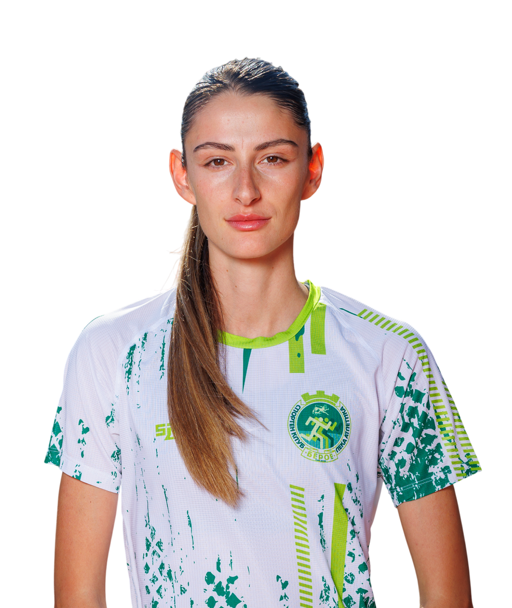
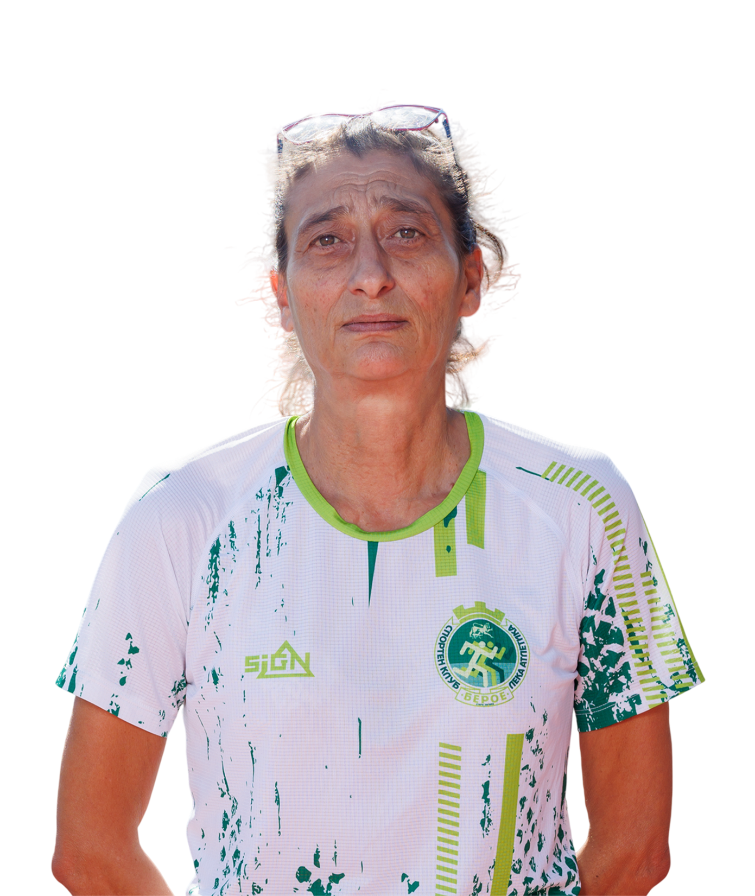
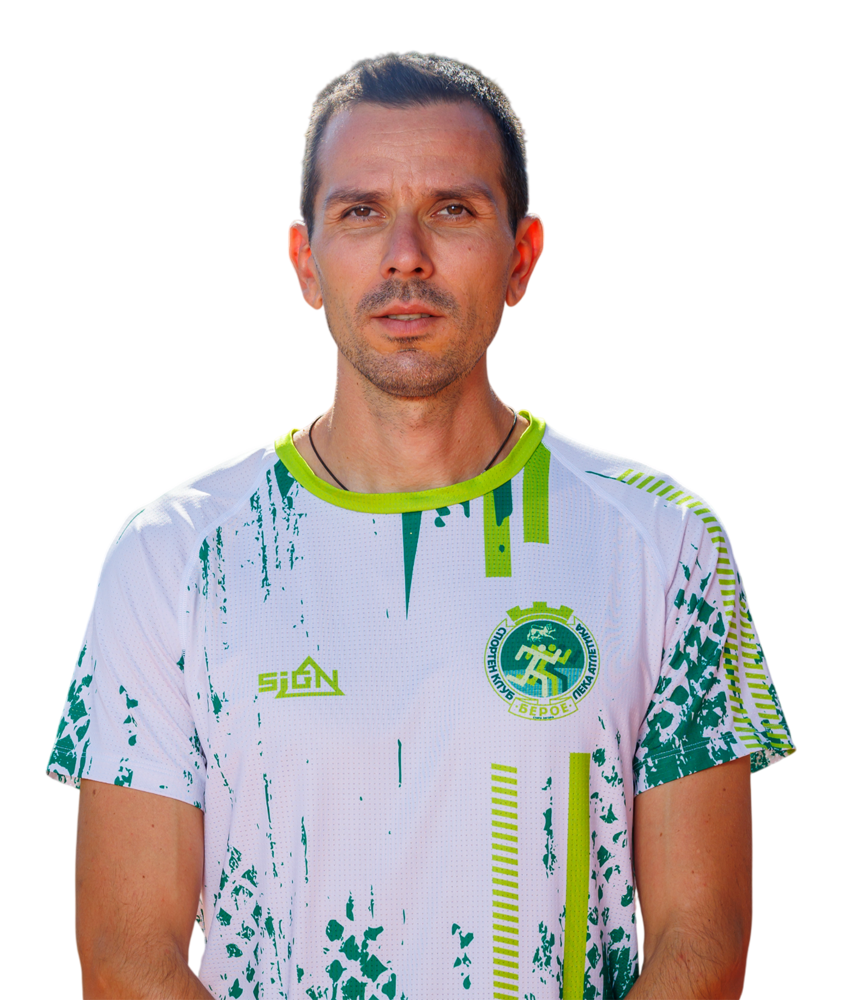
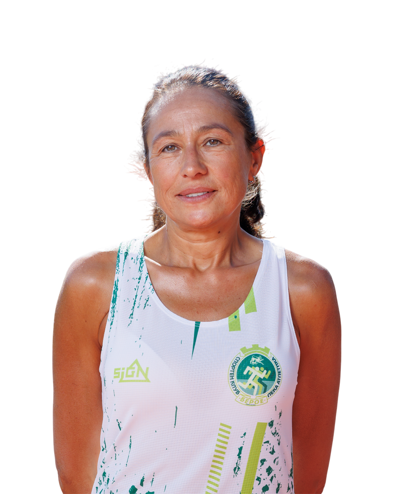

Дисциплина
Постоянство, отговорност и уважение към тренировъчния процес.
Лека атлетика · Стара Загора
Клубна среда за деца, юноши и състезатели
За клуба
СКЛА Берое е спортен клуб по лека атлетика в Стара Загора, насочен към развитие на деца, юноши и състезатели. Клубът изгражда среда, в която дисциплината, постоянството и правилният тренировъчен процес водят до увереност, характер и спортни резултати.
Постоянство, отговорност и уважение към тренировъчния процес.
Подходяща подготовка според възрастта, нивото и целите на атлета.
Клубна среда, в която децата растат като спортисти и личности.
Развиваме леката атлетика чрез тренировки, състезателна дейност и работа с деца и млади атлети.
Създаваме условия за спортно развитие, изграждане на характер и насърчаване на активен начин на живот.
Стадион „Берое“, закрита лекоатлетическа писта и полигон за хвърляния.
Тренировки
Тренировките в СКЛА Берое са организирани според възрастта и етапа на развитие на атлетите.
Първи стъпки в леката атлетика чрез движение, игри и основни двигателни умения.
Развитие на основни качества и запознаване с различни дисциплини в леката атлетика.
По-целенасочена подготовка според възрастта, възможностите и състезателните цели.
Треньори
Тренировъчният процес в СКЛА Берое се води от квалифицирани треньори, работещи с различни възрастови групи — от детска атлетика до подготовка на юноши и състезатели.

Информация за треньора ще бъде добавена допълнително.
Информация за треньора ще бъде добавена допълнително.
Информация за треньора ще бъде добавена допълнително.

Информация за треньора ще бъде добавена допълнително.

Информация за треньора ще бъде добавена допълнително.

Информация за треньора ще бъде добавена допълнително.
Постижения
Състезателите на СКЛА Берое участват в турнири, първенства и състезания по лека атлетика, като развиват своите качества и представят клуба на различни нива.
Участия в градски, регионални и национални състезания.
Постигнати отличия и силни представяния в различни възрастови групи.
Проследяване на напредъка, личните резултати и спортното израстване.
Контакти
За информация относно тренировките, възрастовите групи и записване, може да се свържете с нас.
Първата стъпка е разговор — ще ви насочим към подходящата група според възрастта и нивото.